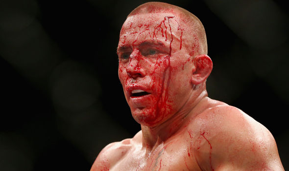
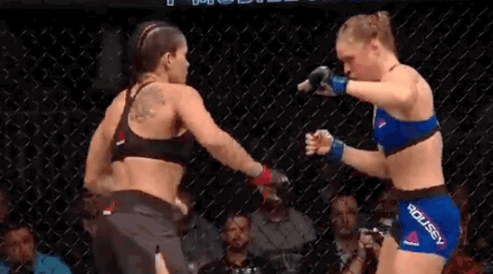

Greatest UFC Fighters
| Rank | Fighter | Achievements | Winning Streak | Tilte Defenses | Years Active |
|---|---|---|---|---|---|
| G.O.A.T | Jon Jones  |
Jon Jones is the greatest fighter in UFC history. He became the youngest champion ever at 23 when he beat Shogun Rua back in 2011. Over the years, he’s set records in the light heavyweight division for title defenses and winning streaks. Then he moved up to heavyweight and won the title, proving he’s the greatest in any weight class. | 27 | 11 | 2008-TBD |
| 2 | GSP  | Georges St-Pierre is one of the greatest MMA fighters of all time. He defended his welterweight title 9 times and even came back in 2017 to win the middleweight title, making him a champ in two divisions. His career ran from 2002 to 2013, and then he had that big comeback before retiring for good. With 26 wins and only 2 losses both he avenged. GSP set the standard for what a complete fighter looks like. | 11 | 9 | 2002-2013 |
| 3 | Mighty Mouse | Mighty Mouse, or Demetrious Johnson, had one of the best runs in MMA history. He went on a 11 fight win streak in the UFC, defending his flyweight title 6 times in a row. His reign at the top lasted from 2012 to 2018, and he’s known for his insane skill set and versatility in the cage. Mighty Mouse streak was broken when he lost to Henry Cejudo, but his legacy as one of the best is set. | 11 | 6 | 2012-2018 |
| 4 | Khabib | Khabib Nurmagomedov retired undefeated with a record of 29 wins and 0 losses, making him one of the most dominant fighters in MMA history. He defended his UFC Lightweight Championship 3 times during his career, with his best wins are over Conor McGregor, Dustin Poirier, and Justin Gaethje. | 29 | 3 | 2018-2020 |
| 5 | Amanda Nunes  | Amanda Nunes is a force in the cage. She’s the first woman to hold two UFC titles simultaneously, winning both the bantamweight and featherweight championships. She defended the bantamweight belt 5 times and the featherweight title twice, proving she’s a force in both divisions. Her resume includes dominant wins over legends like Ronda Rousey, Cris Cyborg, and Holly Holm, showing she's among one of the greatest fighters of all time. | 12 | 7 | 2008-2023 | 6 | Anderson Silva | Anderson Silva is always considered one of the greatest fighters in MMA history. He held the UFC Middleweight Championship for a record 2,457 days and defended it 10 times. Silva's reign lasted from 2006 to 2013, and he set a record for the longest title defense streak in UFC history. His record includes a very long 16 fight winning streak, with dominant victories over ledgends like Rich Franklin, Dan Henderson, and Vitor Belfort. | 16 | 10 | 2006-2013 |
What I Learned
In this Lab I learned about HTML form elements like checkbox,radio, textarea and action. I gained experience with structuring content with tables, forms, and navigation bars. Also I learned how to make web pages accessible by using ARIA roles and labels. I also explored responsive design techniques to ensure the navigation bar adapts to different screen sizes. Overall, this lab helped my understanding of website development and what works best.